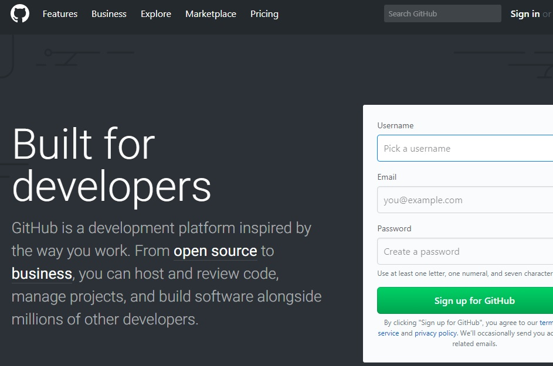

Esse é meu título
Escrito por: Paulo Cezar - 03/11/2017Sub Titulo 1
Esse é mais um site feito em html5 e css para web, você vai aprender como criar um site responsivo simples para vários tipos de tamanhos de tela, e por isso você vai aprender agora mesmo olhando todos os códigos que estão disponíveis. Esse é mais um site feito em html5 e css para web, você vai aprender como criar um site responsivo simples para vários tipos de tamanhos de tela, e por isso você vai aprender agora mesmo olhando todos os códigos que estão disponíveis.Sub Titulo 2
Esse é mais um site feito em html5 e css para web, você vai aprender como criar um site responsivo simples para vários tipos de tamanhos de tela, e por isso você vai aprender agora mesmo olhando todos os códigos que estão disponíveis. Esse é mais um site feito em html5 e css para web, você vai aprender como criar um site responsivo simples para vários tipos de tamanhos de tela, e por isso você vai aprender agora mesmo olhando todos os códigos que estão disponíveis.Sub Titulo 3
Esse é mais um site feito em html5 e css para web, você vai aprender como criar um site responsivo simples para vários tipos de tamanhos de tela, e por isso você vai aprender agora mesmo olhando todos os códigos que estão disponíveis. Esse é mais um site feito em html5 e css para web, você vai aprender como criar um site responsivo simples para vários tipos de tamanhos de tela, e por isso você vai aprender agora mesmo olhando todos os códigos que estão disponíveis.